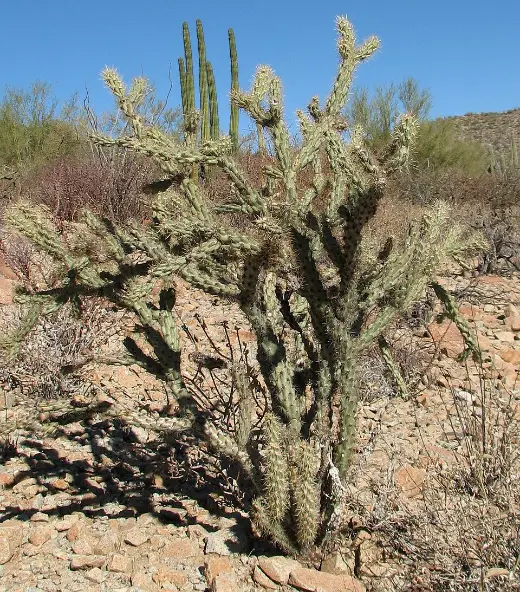

Wild green · Apr–May
Cholla buds
Cylindropuntia acanthocarpa
Also called Cholla buds
Cholla buds is a wild green you can forage from April to May in Southwest. Desert cactus with jointed spiny stems; flower buds in spring.

Caution. Use tongs; remove all spines.
When is cholla buds in season in the United States?
Cholla buds is usually in season April to May. Timing shifts with weather, latitude and altitude.
Where does cholla buds grow in the United States?
Cholla buds grows in Arizona, Nevada, New Mexico, Texas, Utah. Regions: Southwest.
How do you recognise cholla buds?
Desert cactus with jointed spiny stems; flower buds in spring.
How do you harvest cholla buds?
Pinch off young tips and top leaves before the plant flowers, when they are tender and mild. Leave the roots and lower leaves so it regrows. Pick away from roads, sprayed verges and dog-walking paths.
How do you eat cholla buds?
De-spined buds boiled or pit-roasted, a Tohono O'odham food.
How do you store cholla buds?
Dry.
What is cholla buds good for?
Calories.